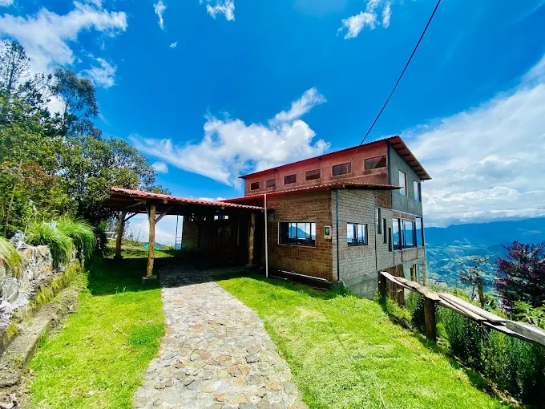
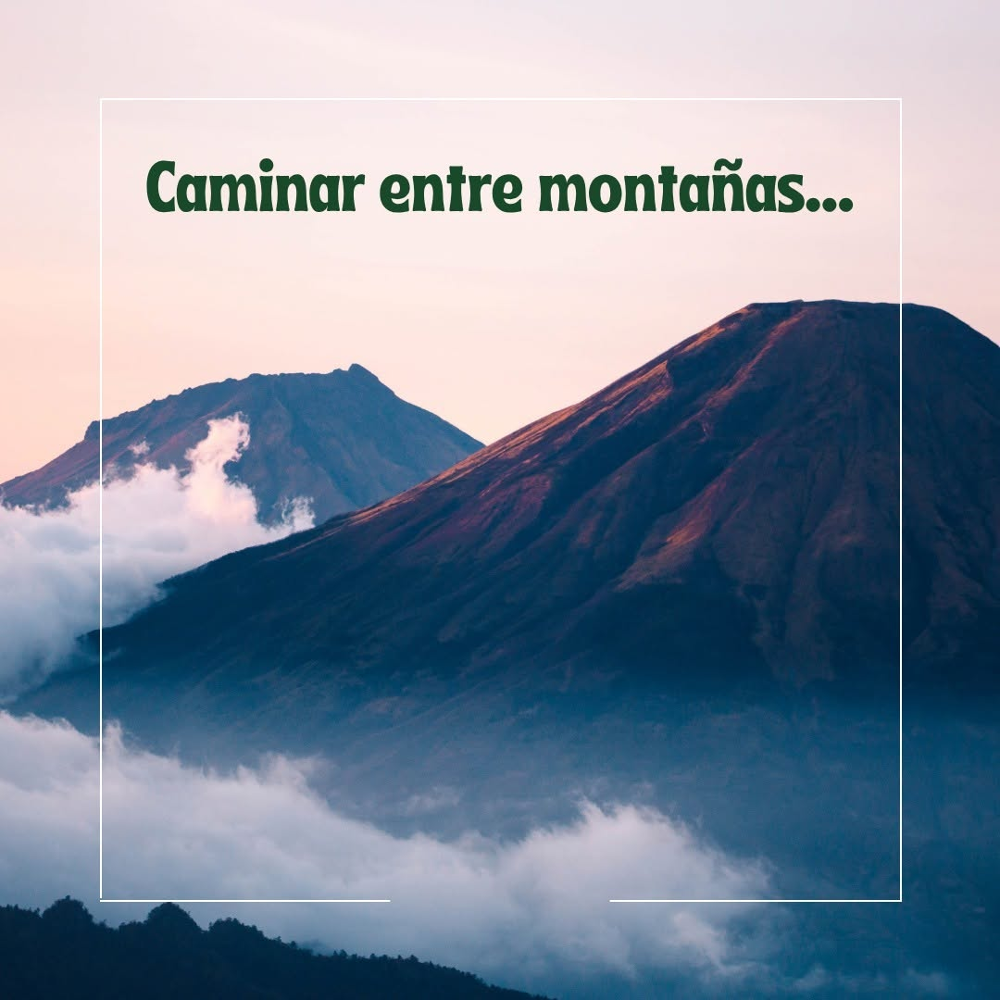

×
Cargando experiencia interactiva...
Bienvenido al mapa interactivo de Sigchos. Explora la riqueza del ecosistema haciendo clic en cada una de las paradas. Este recorrido conecta el conocimiento ancestral con la conservación del páramo.

